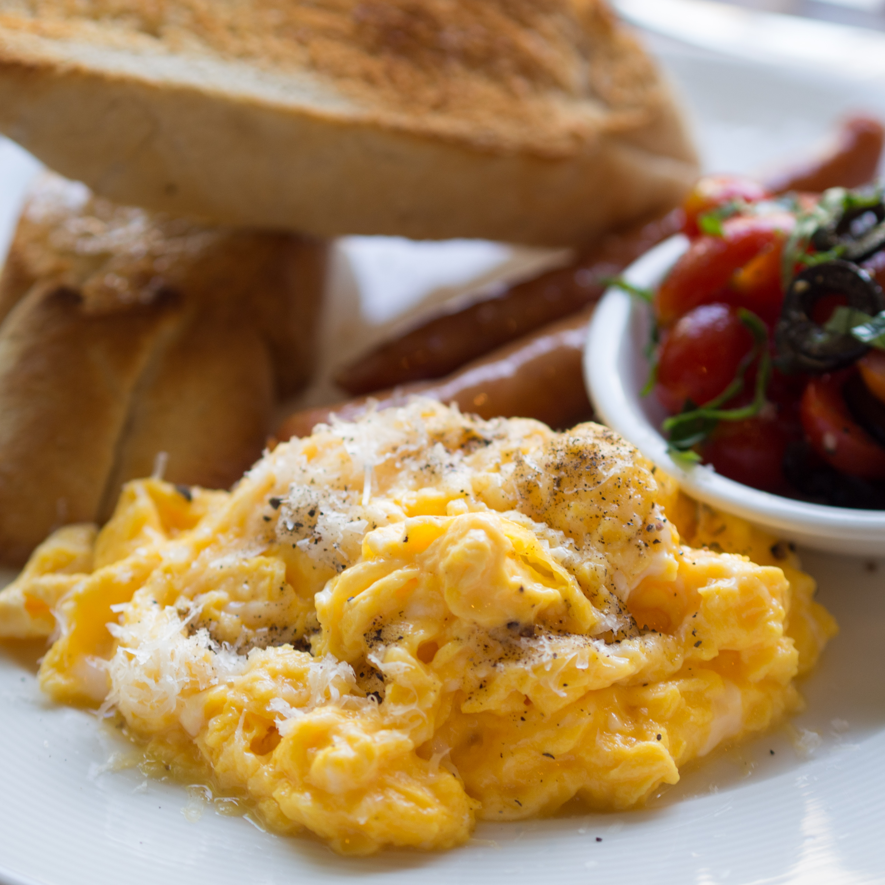

Home
Scrambled Eggs

"Sacrambled eggs" by Takeaway. Licensed
under CC BY-SA 3.0.
Description
Baked scrambled eggs are a hands-off, oven-cooked version of traditional stovetop scrambled eggs made by whisking eggs
with milk or cream, pouring them into a greased baking dish, and baking them while stirring occasionally.
Ingredients
- 1/2 cup butter, melted
- 24 large eggs
- 2 1/4 teaspoons salt
- 2 1/2 cups milk
Steps
- Step 1: Gather all ingredients. Preheat the oven to 350 degrees F (175 degrees C).
- Step 2: Pour melted butter into a 9x13-inch glass baking dish.
- Step 3: Whisk eggs and salt together in a large bowl until well blended. Gradually whisk in milk. Pour egg mixture into the buttered dish.
- STep 4: Bake uncovered in the preheated oven for 10 to 15 minutes. Stir egg mixture and continue to bake about 10 minutes more; stir
again. Continue to bake until until eggs are just set and no longer runny, about 5 more minutes.
- Step 5: Serve and enjoy!